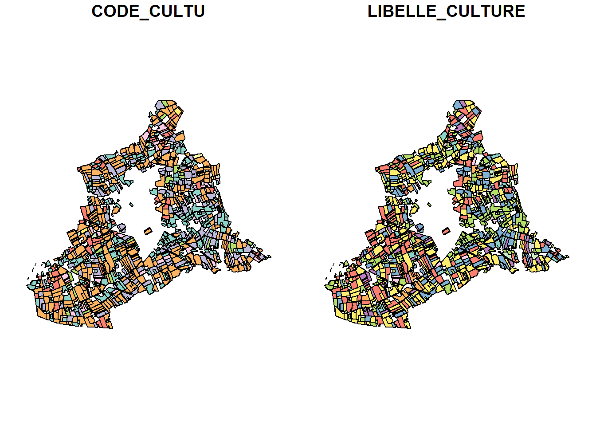
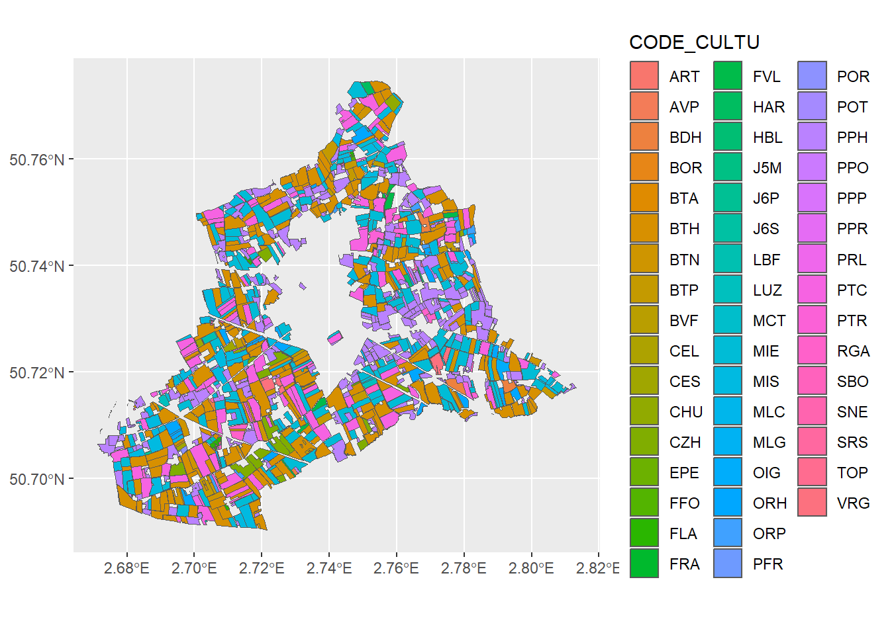

2 leaflet
2.1 Récupération des données rpg pour une commune aléatoire des Hauts-de-France
2.1.1 Récupération des données relatifs aux cultures
2.1.2 Récupération des limites communales d’OpenStreetMap en date du 1er janvier 2022
2.1.3 Chargement des données RPG des Hauts de France
data_rpg_geo_HDF <- st_read("DATA/RPG_2-0__SHP_LAMB93_R32_2022-01-01/PARCELLES_GRAPHIQUES.shp")Reading layer `PARCELLES_GRAPHIQUES' from data source
`E:\PROJETS\GITHUB\rpg\DATA\RPG_2-0__SHP_LAMB93_R32_2022-01-01\PARCELLES_GRAPHIQUES.shp'
using driver `ESRI Shapefile'
Simple feature collection with 572158 features and 6 fields
Geometry type: POLYGON
Dimension: XY
Bounding box: xmin: 584793.3 ymin: 6859530 xmax: 790651.3 ymax: 7108926
Projected CRS: RGF93 Lambert 93data_rpg_geo_HDF_code_cultu <- data_rpg_geo_HDF |>
select(CODE_CULTU) |>
left_join(data_ref_culture, by = join_by(CODE_CULTU == CODE_CULTURE))
crs <- st_crs(data_rpg_geo_HDF_code_cultu)2.1.4 Sélection aléatoire d’un commune et affichage des données RPG associées
chr "59043"message(code_insee)59043commune <- limites_communales |>
dplyr::filter(insee == code_insee)
nom_commune <- commune$nom
commune_g <- st_geometry(commune)
plot(commune_g)
zone_lambert <- st_transform(commune_g, crs = "EPSG:2154")
inter <- st_intersection(data_rpg_geo_HDF_code_cultu, zone_lambert)Warning: attribute variables are assumed to be spatially constant throughout
all geometriesplot(inter)
inter_wgs84 <- st_transform(inter, crs = "EPSG:4326")
ggplot() + geom_sf(data = inter_wgs84, aes(fill = CODE_CULTU))
pal <- colorFactor(palette = "YlOrRd", domain = inter_wgs84$CODE_CULTU)
leaflet(inter_wgs84) |>
addTiles() |>
addPolygons(color = NA,
fillColor = ~ pal(CODE_CULTU),
fillOpacity = 0.5,
popup = ~paste(LIBELLE_CULTURE, CODE_CULTU)) |>
addLegend(pal = pal, values = ~ CODE_CULTU, opacity = 0.5)Warning in RColorBrewer::brewer.pal(max(3, n), palette): n too large, allowed maximum for palette YlOrRd is 9
Returning the palette you asked for with that many colorsWarning in RColorBrewer::brewer.pal(max(3, n), palette): n too large, allowed maximum for palette YlOrRd is 9
Returning the palette you asked for with that many colors#map <- add_titre(map = map,
# titre = paste0("parcelles cultivées sur la commune de ", nom_commune)
#)
#map